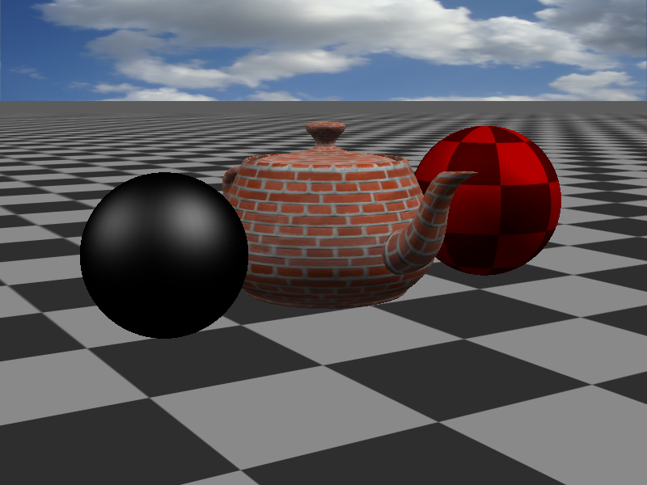
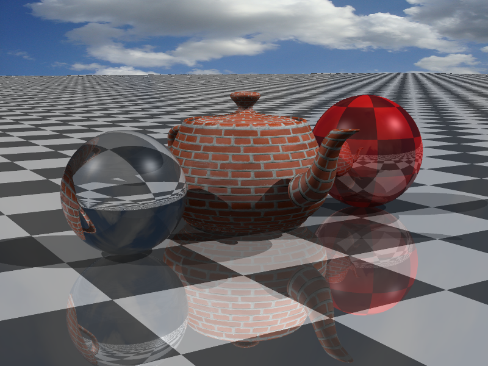
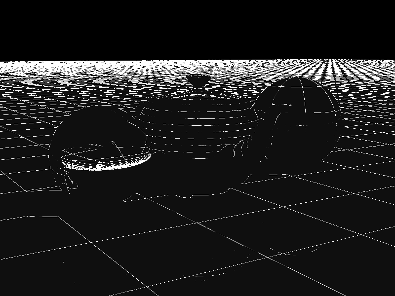
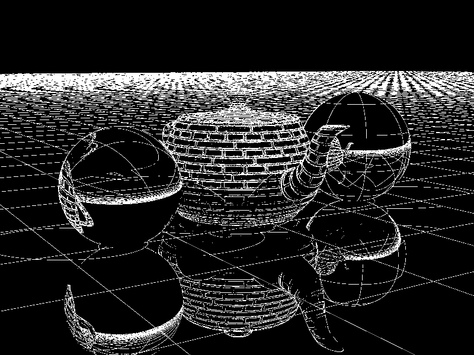

| MacBook Pro (Retina, 13-inch, Early 2015) | |
|---|---|
| Processor | 2.9GHz intel Core i5 |
| Memory | 8GB 1867 MHz DDR3 |
| Graphics | Intel Iris Graphics 6100 1536 MB |

First, I tried to take 4 sample per pixel:
Then, I applied adaptive antialiasing. 4 sample -> 16 sample -> 64 sample
 |
 |
 |
There is still some alias in the edge of background, I guess texture filtering is the solution to this issue.